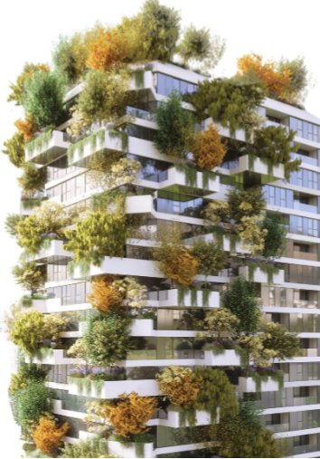

Zgjedhja e atyre
qe dine te zgjedhin

Zgjedhja e atyre
qe dine te zgjedhin
Italian architect Stefano Boeri has has teamed up with Albanian largest developer Gener 2, to design and develop a vertical forest tower for Tirana, Albania, which will be planted with colourful and scented flowers and herbs.
Named the Tirana Vertical Forest, the tower with a glass facade punctuated with fragrant planted balconies will be one of Stefano Boeri Architetti's signature vertical forest towers.
Vertical forests are buildings that are planted with trees, shrubs and flowers to increase the green surface area in cities and improve local air quality. Stefano Boeri Architetti specialise in these green facades, and has designed towers in cities such as Milan, Utrecht and Nanjing.
Aba Business Center, Floor 7, Rruga Papa Gjon Pali II, Tirana, Albania
Email: info@gener2.al
Tel: +355 4 4501700 I Fax: +355 4 2248312